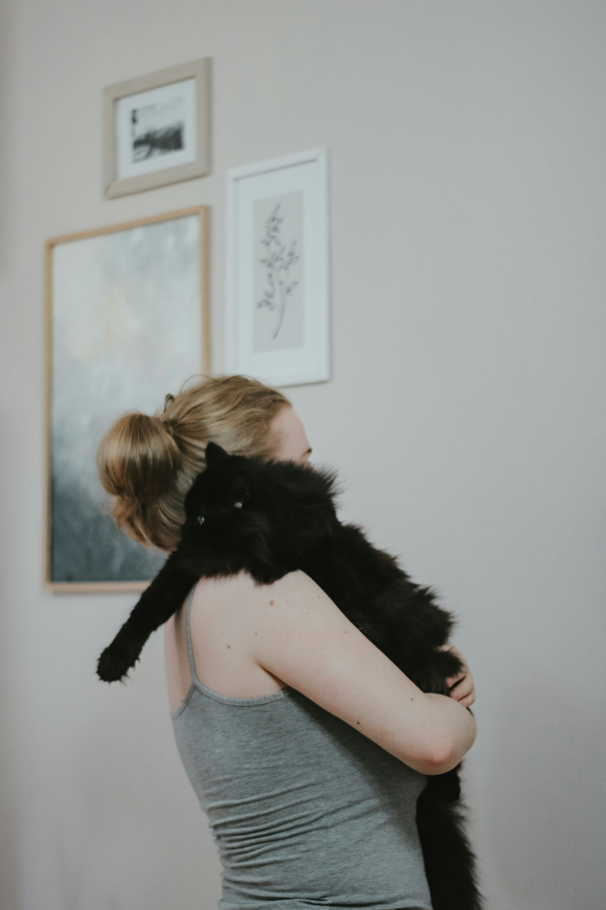

Whiskers’ Second Chance
Whiskers, a shy tabby cat, had been waiting in the shelter for almost a year. That changed when 12-year-old Lily walked in with her parents, looking for a furry friend. At first, Whiskers was a little nervous, but Lily sat quietly by her side, reading stories and offering treats. Day by day, their bond grew. Now, they do everything together—homework, movie nights, even tea parties. “Whiskers is my best friend,” Lily says. “She makes every day better.”

Benny’s Adventures
Benny, an energetic border collie, was surrendered by a family who couldn’t keep up with him. Then Sofia, a travelling blogger with a big van and an even bigger love for animals. Benny now spends his days chasing butterflies, playing fetch, and starring in the Sofia’s travelling blog.

Max & Martin – A New Beginning
After losing his senior dog, Martin wasn’t sure he was ready to open his heart again. But then he met Max—a gentle soul with sad eyes and a quiet, loyal presence. The connection was instant. Within days, Max had become Martin’s steadfast companion, joining him on hikes, curling up beside him during late-night movies, and even helping him reconnect with neighbors during their daily walks. “I thought I was rescuing Max,” Martin says, “but really, he rescued me.”

From Forgotten to Family: Hazel
Hazel was found abandoned in a city park. After being rescued, she was adopted by the Thompsons, whose daughter Olivia has autism. Hazel’s calm, soothing presence has helped Olivia open up and engage more than ever before. “Hazel is our miracle in fur,” her mom says.
Two Hearts, One Leash: Luna & Jay
Jay, a war veteran adjusting to civilian life, found emotional healing in Luna, a mixed-breed rescue with trust issues of her own. Through patience and bonding, the two now volunteer at schools together, showing children the power of kindness and second chances.
Milo’s Golden Retirement
Milo, a 10-year-old orange cat and former therapy cat, was adopted by Nora, a widowed senior looking for a calm, affectionate companion. The bond was immediate. Now, Milo curls up beside Nora during her morning tea, follows her from room to room, and sits quietly by her side at book club gatherings. “I thought I was giving Milo a peaceful home,” Nora says, “but he gave me comfort I didn’t know I needed.”